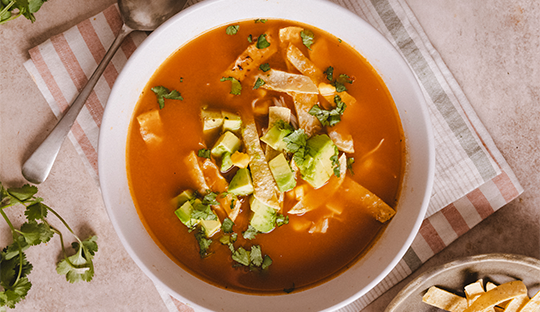

Mis Recetas Favoritas

Sopa de Tomate (Sopa Azteca)
Una sopa tradicional mexicana con un toque de chile, tortilla y aguacate. Calientita y llena de sabor.

Lasaña de Pollo en Salsa Blanca
Una lasaña cremosa con pollo desmenuzado, mucho queso y salsa blanca, perfecta para compartir en familia.

Arroz con Leche
Un postre clásico que nunca pasa de moda: cremoso, dulce y con aroma a canela.